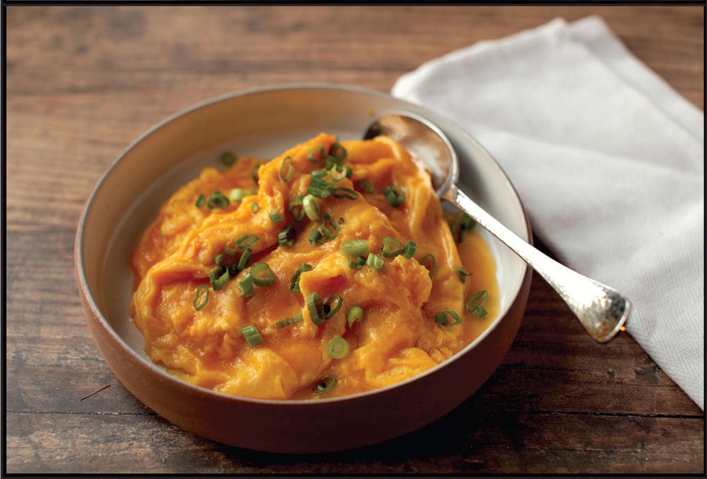
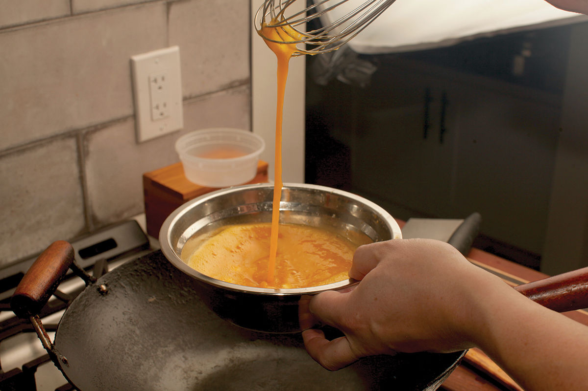
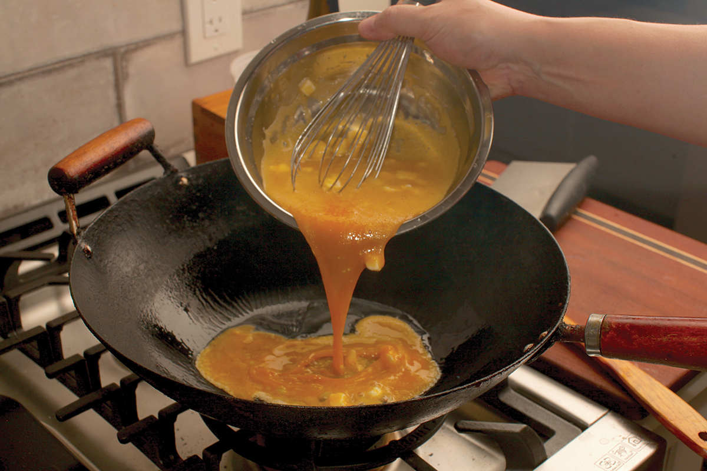
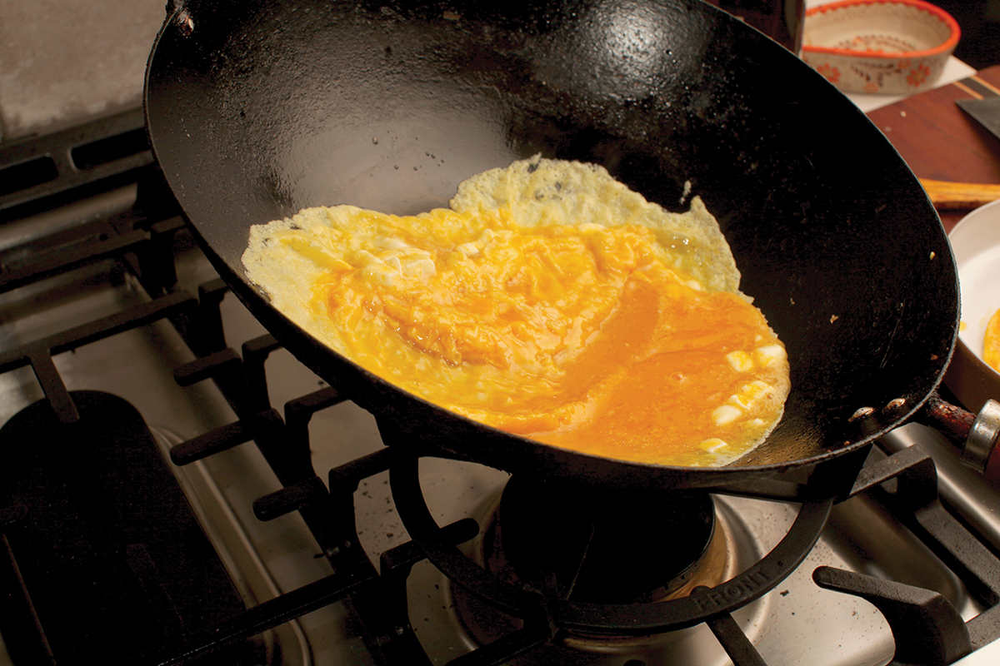
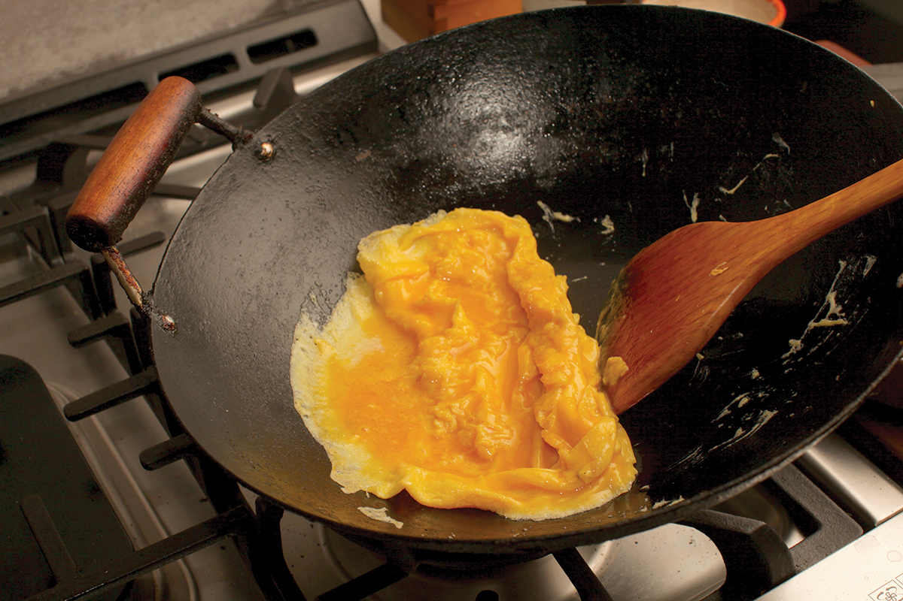
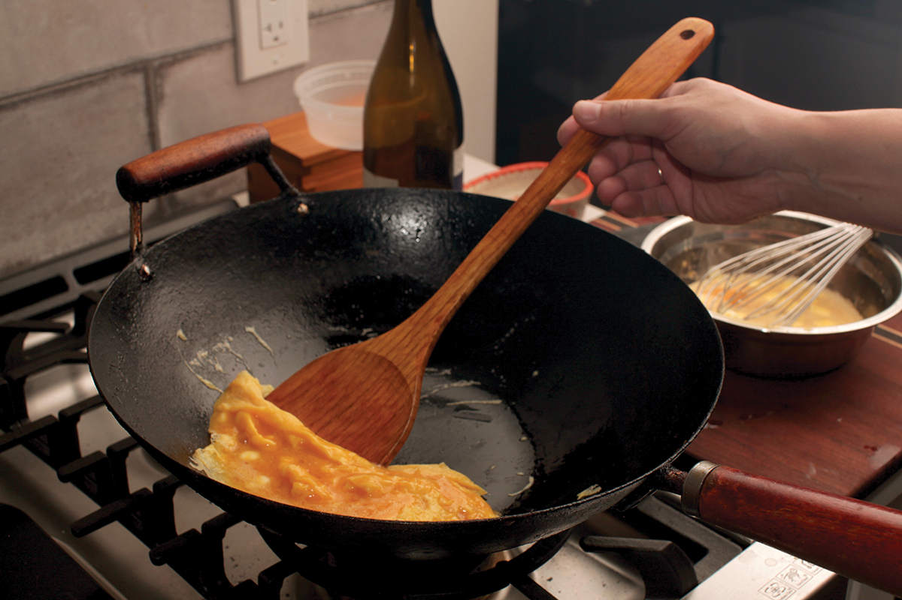

CREAMY LAYERED SCRAMBLED EGGS (WHAMPOA EGGS)
My friends Steph Li and Christopher Thomas from the YouTube channel Chinese Cooking Demystified posted a video for what they called “Cantonese scrambled eggs” in September of 2020. It quickly became one of their most popular videos, and for a good reason: the eggs are spectacular. To make their version, they beat eggs with a cornstarch slurry and a drizzle of sesame oil, then pour them into a hot wok greased with lard. By repeatedly shifting the wok on and off the heat, they control how fast the eggs cook. As each layer of egg set on the bottom, they lift it with a spatula, letting more raw egg run off the top and into the bottom of the hot wok. By never actually stirring or flipping the eggs, you wind up with scrambled eggs that have layers of softly set curds, the tops of which are still moist and glistening, cooked only by the heat rising from the eggs below them.
Theirs is just one of many techniques for making Whampoa-style scrambled eggs.
The origins of the dish are not clear. Apocryphally, it was created by the boat-dwelling Tanka in Guandong’s Whampoa anchorage, the main anchorage of the Pearl River Delta (a region that has been inhabited since the Neolithic era) and a necessary stop along maritime trade routes to Canton. In cheffy versions, the scrambled eggs are seasoned with a dash of fish sauce and lard, then cooked in a thin layer on the bottom of a wok and skillfully folded into glistening waves with a spatula before being arranged radially on a plate, the tops of the eggs resembling folds of golden silk. Street vendors make rapid-fire versions, the eggs never sitting still in the pan during their 15- second cook time before they’re deposited in moist folds on disposable plates. (I’ve tried making both of these versions on numerous occasions, with varying degrees of failure.)
Other chefs insist that the egg whites be beaten separately into a soft foam before the yolks and seasonings are whisked in. This frothy scramble is then cooked extremely rapidly over high heat, folding and shaking the wok to prevent any browning of the eggs and pulling them out onto a plate while still semiraw, letting the residual heat finish them as they rest at the table.*
Sho Spaeth at Serious Eats offers a version his family made where paper-thin half-cooked omelets are stacked one of top of the other, the liquid eggs on the top of each one warming through with the residual heat of the next omelet stacked on top. (This version I can handle.)
Of the half dozen techniques I’ve tried, my favorite is inspired by Steph and Chris’s recipe. The technique of whisking a cornstarch slurry into the eggs goes a long way toward foolproofing the dish. Plain eggs can go from tender to tough with just a few seconds of overcooking—part of what makes the cheffier recipes so difficult to master. This is because as scrambled eggs are heated, their proteins form a three-dimensional matrix that tightens up as it’s heated. Eventually, it tightens enough that moisture will get squeezed out.
The cornstarch slurry mitigates this effect by interfering with that protein matrix and preventing proteins from bonding together too tightly. Even slightly overcooked eggs stay moist and tender that way. Recipe writer Mandy Lee of the blog Lady and Pups uses this technique for extra-moist scrambled eggs. Many recipes I’ve seen from Guangdong also recommend adding clarified lard to the eggs. This adds richness while also helping to keep the eggs tender as they cook. I don’t typically keep lard at home, and less-saturated oils don’t really offer the same richness, so I wondered how butter would work. I incorporated it into the scrambled eggs in the same way I do for soft French omelets: dicing the butter into fine cubes and beating them into the eggs. The butter melts as the eggs cook, serving the dual purpose of enriching them while slowing down the cooking process to a manageable speed.
(If you keep a container of strained bacon fat in your kitchen, it’s a wonderful variation on the dish. Heat it until it’s just barely liquefied, then whisk it into the scrambled eggs in place of the butter or lard in my recipe.)
Aside from overcooking, there’s only one other way to mess this dish up: not properly preheating your wok. If your wok is too cold when the eggs go in, they will stick to the bottom. The eggs should begin to sputter and bubble as soon as they hit the hot fat in the bottom of the wok. On Western burners with very wide rings, I find that sometimes the center of the wok will fail to preheat properly, so for egg dishes, I like to move the wok around as it preheats, making sure that the center of the wok spends some time directly over the flames.
If you’re feeling decadent or happen to have a few spare egg yolks lying around because you used up the whites in a marinade or lobster sauce, make this dish with a combination of whole eggs and egg yolks for extra-creamy richness.

|
Yield Serves 2 to 3 (see Notes) |
Active Time 10 minutes Total Time 10 minutes |
This recipe is easy to make for any number of people by scaling up all the ingredients and repeating step 4 as needed. You can omit the fish sauce and use ½ teaspoon salt and an optional ¼ teaspoon MSG in its place. Alternatively, season the eggs with only a bare pinch of salt and serve them with a drizzle of soy sauce on top. In place of the butter you can use lard or rendered bacon fat. Heat the fat in the wok or in the microwave until it is just barely melted before whisking it into the eggs in step 1.
The cornstarch slurry mitigates this effect by interfering with that protein matrix and preventing proteins from bonding together too tightly. Even slightly overcooked eggs stay moist and tender that way. Recipe writer Mandy Lee of the blog Lady and Pups uses this technique for extra-moist scrambled eggs. Many recipes I’ve seen from Guangdong also recommend adding clarified lard to the eggs. This adds richness while also helping to keep the eggs tender as they cook. I don’t typically keep lard at home, and less-saturated oils don’t really offer the same richness, so I wondered how butter would work. I incorporated it into the scrambled eggs in the same way I do for soft French omelets: dicing the butter into fine cubes and beating them into the eggs. The butter melts as the eggs cook, serving the dual purpose of enriching them while slowing down the cooking process to a manageable speed.
(If you keep a container of strained bacon fat in your kitchen, it’s a wonderful variation on the dish. Heat it until it’s just barely liquefied, then whisk it into the scrambled eggs in place of the butter or lard in my recipe.)
Aside from overcooking, there’s only one other way to mess this dish up: not properly preheating your wok. If your wok is too cold when the eggs go in, they will stick to the bottom. The eggs should begin to sputter and bubble as soon as they hit the hot fat in the bottom of the wok. On Western burners with very wide rings, I find that sometimes the center of the wok will fail to preheat properly, so for egg dishes, I like to move the wok around as it preheats, making sure that the center of the wok spends some time directly over the flames.
If you’re feeling decadent or happen to have a few spare egg yolks lying around because you used up the whites in a marinade or lobster sauce, make this dish with a combination of whole eggs and egg yolks for extra-creamy richness.





INGREDIENTS
6 large eggs (or 4 eggs plus 4 egg yolks)
2 teaspoons (10 ml) fish sauce (optional; see Notes)
1 teaspoon (3 g) cornstarch whisked together with 1 tablespoon (15 ml) water
2 tablespoons (about 30 g) unsalted butter, cut into small cubes (see Notes)
2 tablespoons (30 ml) peanut, rice bran, or other neutral oil or lard or bacon fat
Handful of sliced scallions or chives (optional)
DIRECTIONS
1In a large bowl, beat the eggs very thoroughly with a whisk, a fork, or a pair of chopsticks. This process should take at least 1 minute, and when you are done, the egg should be completely smooth. Test this by lifting your utensil up out of the eggs, letting them drizzle back down. There should be no visible strands or lumps. If there are, keep beating.
2Add the fish sauce (if using), cornstarch slurry, and butter to the eggs and beat to incorporate (the butter will stay solid at this stage).
3Heat a wok over high heat until lightly smoking, moving it around the burner so that the entire bottom surface heats evenly. Reduce the heat to medium-low. Add 1 tablespoon (15 ml) of the oil and swirl to coat. Immediately add half of the egg mixture. It should immediately start to bubble and puff. Swirl the wok around to make the omelet as wide as possible. Continue swirling until the liquid egg no longer forms deep pools, 15 to 30 seconds total. Remove the wok from the heat, then, using a wok spatula, carefully push the omelet from one side of the wok to the other, lifting and layering it as you go. Make sure not to fold the omelet; the goal is to leave a layer of liquid egg on top. When the omelet is gathered to one side, lift it out and place it on a plate. (It’s OK if it breaks and you lift it in sections.)
4Wipe out the wok with a paper towel, return it to high heat until lightly smoking, reduce the heat to medium-low, and repeat the process with the second batch of eggs, shingling them over the first batch on the plate as they are finished. Sprinkle with scallions or chives (if desired), let the eggs rest for 20 to 30 seconds, and serve.
*There is a similar modern dish popular in Japan, Korea, and Taiwan called “tornado omelet.” It starts as a thin layer of well-beaten egg ladled into a hot pan. As soon as the eggs are beginning to set and bubble around the edges, the cook gathers two sides and pulls them to the center of the pan with a pair of chopsticks and begins slowly rotating the pan so that the set curd forms an inverted vortex, its folds coated in a moist sheen of barely set egg. This tornado omelet is served on top of fried rice. (I can’t make this one either, and not for lack of trying.)